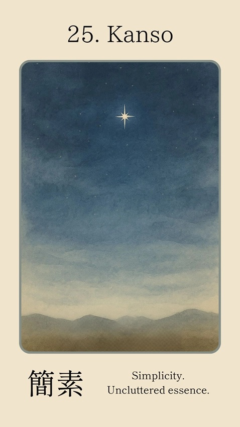
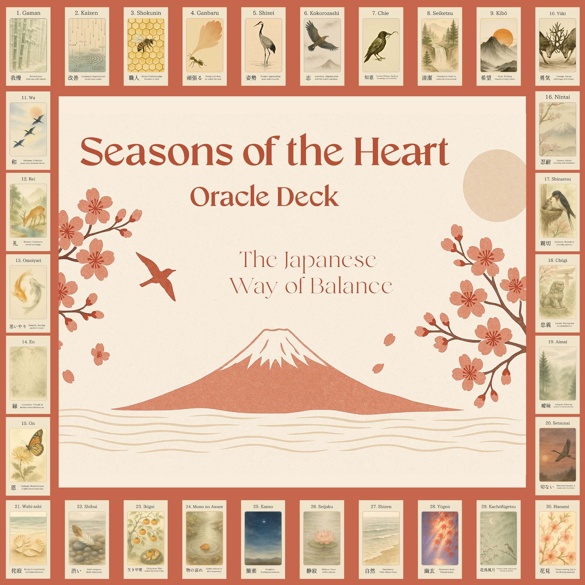
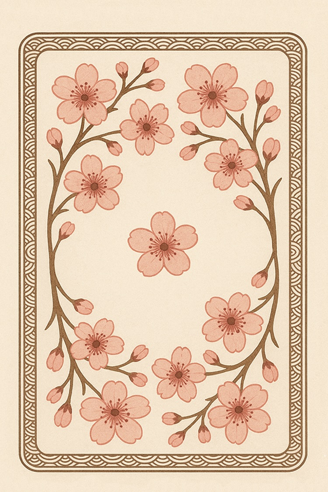
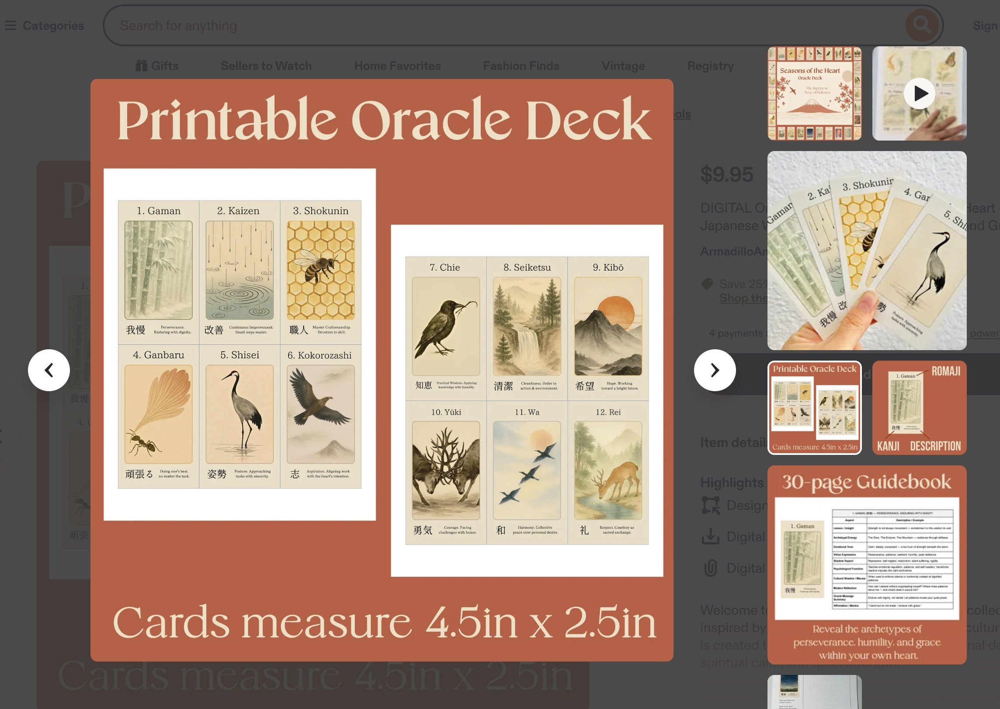

Card No. 25 · Seasons of the Heart Oracle
簡素
What this ancient understanding of simplicity truly teaches, why what is essential is enough, and what it might be asking you to release in order to finally see what remains.

What is Kanso?
Kanso (簡素) is one of the seven core principles of Zen aesthetics — the quality of simplicity, of uncluttered essence, of a life or a space or a creative work pared back to what is genuinely necessary. The character combines the ideas of simple and plain, pointing not toward bareness for its own sake but toward the clarity that becomes possible when everything unnecessary has been carefully, deliberately removed.
The single star in a vast sky reveals the immensity of the darkness it inhabits in a way that a crowded constellation cannot. The monk's cell — unadorned, everything in its place, nothing there that does not serve — creates a quality of presence that an overfurnished room never will. The poem that uses only the words it cannot do without. These are kanso: not poverty, not deprivation, but a form of abundance achieved through subtraction — the abundance of space, of clarity, of being able to see exactly what is there because nothing else is obscuring it.
The Core Teaching
Kanso is grounded in a radical trust: that what remains after all that is unnecessary falls away is not nothing — it is everything. The essential. The true. The thing that was there all along beneath the accumulation. This trust runs counter to the logic of most modern life, which tends to assume that more is better, that fullness is achieved by addition, that complexity signals depth and simplicity signals lack.
What Kanso reveals — to the person willing to practise it honestly — is that the opposite is usually true. The mind that is not bombarded with competing demands can think with a clarity that the overstimulated mind never reaches. The room that is not filled with things allows a quality of rest that the cluttered room cannot offer. The life organised around a few genuine priorities carries a sense of meaning that a life stretched across dozens of obligations rarely finds. Simplicity is the light that endures — not because everything else has been eliminated, but because what remains shines without interference.
"Simplicity is the light that endures. What is essential is enough."Kanso · Seasons of the Heart Oracle
The Card at a Glance
Archetypal Energy
The Star · The Monk · The Minimalist — clarity that shines through stillness and space
Emotional Tone
Calm, luminous, spacious — beauty in stillness and proportion
Virtues
Clarity · Restraint · Presence · Humility · Balance
Psychological Function
Encourages focus, decluttering of mind and environment, and peace through simplification. Clears distractions so essence can emerge
Light & Shadow
Understanding a card fully means holding both its gifts and its warnings. Kanso's shadow tends to arrive gradually, as the genuine practice of simplification hardens into something more rigid and more self-regarding than it began.
The Light of Kanso
In its highest expression, Kanso is a form of generosity — the willingness to remove from your life anything that is interfering with your full presence to what matters. It is not self-deprivation but self-clarification: the experience of discovering, through deliberate simplification, what you actually need, what actually brings you joy, and what you were carrying out of habit, obligation, or the vague anxiety that you might need it someday. The clarity this produces is genuinely freeing — and freeing in a way that addition never achieves.
The Shadow of Kanso
The shadow arrives when the practice of simplification becomes a form of self-congratulation — when the willingness to let go becomes a marker of spiritual achievement rather than a means to genuine presence. Minimalism as moral identity. The ascetic who has confused deprivation with depth. And the social dimension: the subtle judgment of those whose lives look more complex, more cluttered, less refined. When Kanso becomes about how your life appears rather than how your life feels, it has drifted into its shadow — and the simplicity it claims to embody has been replaced by a more sophisticated form of acquisition.
Ask yourself honestly: Is my simplification in service of genuine clarity and presence — or in service of a self-image? Am I releasing what genuinely doesn't serve, or am I using "simplicity" as a way of controlling how I appear — to myself or to others?
Reflection & Practice
These questions are designed to move you beyond the surface of the card and into genuine self-inquiry. Take your time with each — there are no right answers, only honest ones.
What can I release to make room for what truly matters? If I looked honestly at what I am giving my time, energy, and attention to — what is essential, and what is simply there because I haven't yet chosen to let it go?
Where does simplicity bring me peace and clarity? When in my life have I felt the particular relief and aliveness that comes from having less to manage — and what would it take to create more of that?
What is cluttering my inner life right now — the habits of thought, the repetitive worries, the stories I have told myself for so long I have stopped examining them? What might I discover if I released even one of them?
Is my desire for simplicity serving genuine clarity and presence — or is it about how my life appears? What is the difference, for me, between simplification that frees and simplification that performs?
If all that is unnecessary fell away from my life — if I were left with only what is genuinely essential — what would remain? And is what remains what I would choose, or does this question reveal something about a need to recalibrate?
Your Mantra
"I return to what is essential.
In simplicity, I find truth."
The Japanese Way of Balance
Kanso is Card 25 of 30 in this collection, each drawn from the wisdom traditions of Japan. Together they explore the full landscape of the inner life — resilience, beauty, impermanence, grief, joy, and the profound art of living in balance with what is.
Each card comes with a full illustrated guidebook exploring its meaning, shadow aspect, and reflective practice — a genuine companion for the examined life.
Includes the complete 30-card deck and full illustrated guidebook
Order the Deck

Print at home
The printable version of Seasons of the Heart Oracle is also available in my Etsy shop. This option is ideal if you want instant access, prefer a DIY format, or would like to use the cards in your journaling, reflection, or creative practice.
Download, print, cut, and begin working with the deck in your own way.
View Printable Deck
The deck awaits
Return to the deck whenever you need guidance — each draw is a new moment of reflection.
Return to the Deck